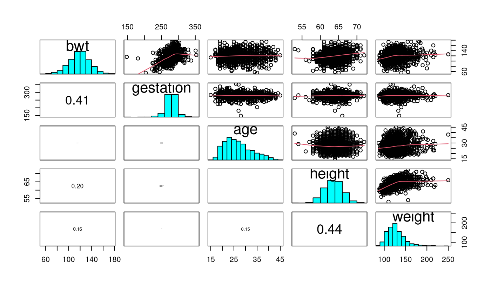
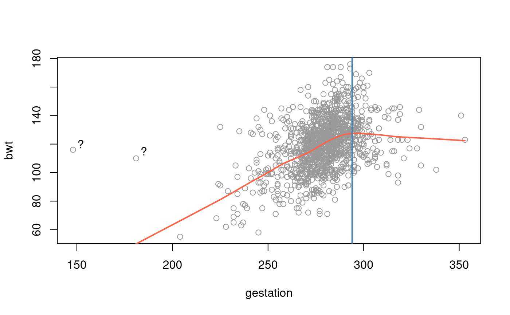
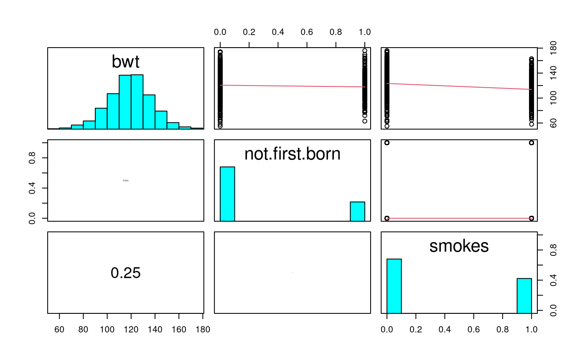
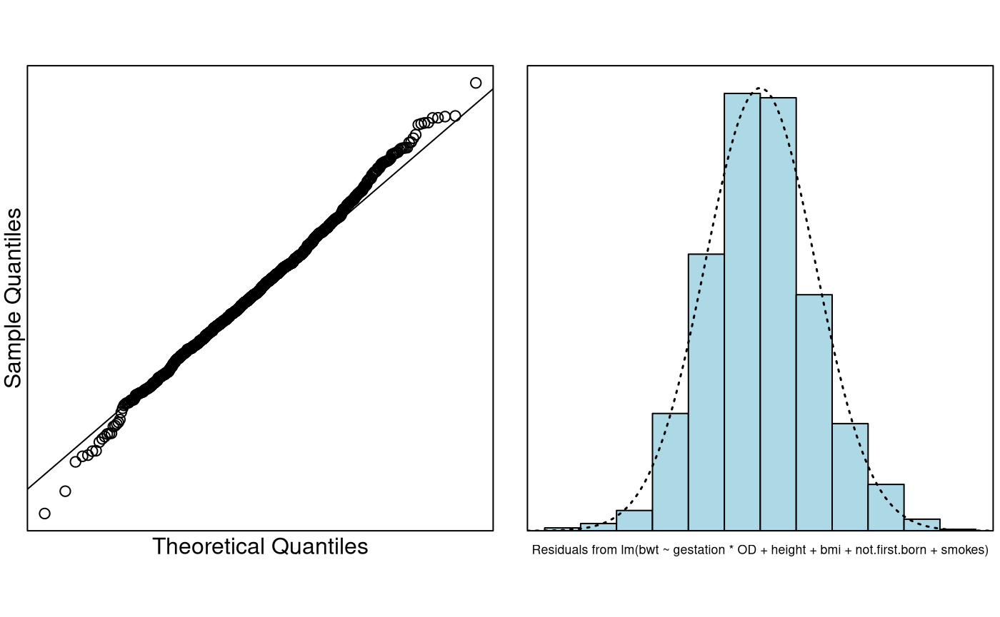

Background
Let’s examine what affects the birth weight of babies.
-
bwt: birth weight in ounces -
gestation: length of pregnancy in days -
not.first.born: 0=first born, 1=not first-born -
age: mother’s age in years -
height: mother’s height in inches -
weight: mother’s pre-pregnancy weight in pounds -
smoke: smoking status of mother 0=not now, 1=yes.
This dataset was obtained from .
It accompanies the excellent text Stat Labs: Mathematical Statistics through Applications Springer-Verlag (2001) by Deborah Nolan and Terry Speed.
Read in and Inspect the Data
Babies.df = read.table("babies_data.txt", header = TRUE)
pairs20x(Babies.df[, c(1, 2, 4, 5, 6)])
Looking at the pairs plot, we see a somewhat weak relationship
between bwt and mother’s height and
weight.
There is a stronger relationship between the gestation time
(gestation) for the babies and it’s bwt which
is not surprising, as the longer the child is in the mother’s womb the
longer the child has had time to have nutrition and grow — up to a point
— then it `flattens out’ somewhat.
There doesn’t seem to be any relationship between a mother’s
age and her child’s bwt.
Let us look deeper into the relationship between bwt and
gestation.
plot(bwt ~ gestation, data = Babies.df, col = "gray60")
lines(lowess(Babies.df$gestation, Babies.df$bwt), col = "tomato", lwd = 2)
text(152, 120, "?")
text(185, 115, "?")
abline(v = 294, col = "steelblue", lwd = 2)
Note also that there seems to be some `weird’ data points in these plots. There does not appear to be much of a relationship between the s. That is, the explanatory variables do not seem to have any strong relationships between them.
Most babes are born before 42 weeks =
days. It seems that beyond this point babies cease to grow and hence the
‘flattening out’ and/or decrease. We’ll create a dummy variable
OD (for overdue) for this time point.
Let’s look at the categorical (factor) data variables against the
baby’s birth weight (bwt).
They are not.first.born and smoke.

Here, we only see a slight relationship between whether the mother
smokes (smoke) and bwt. There is a slight
decrease in babies bwt if the mother smokes. This increases
the chance of a mother having a low birth weight baby if she smokes –
perhaps another reason to avoid tobacco!
The variable not.first.born does not appear to have too
much of an effect — which is perhaps not a surprise given that this
variable may not be as important as it once was as family size has
deceased markedly in the developed world (this is US data). We’ll check
this out later.
Model Building and Check Assumptions
# Let's create OD as mentioned earlier.
Babies.df$OD = 1 * (Babies.df$gestation > 294)
range(Babies.df$gestation[Babies.df$OD == 0]) # Check## [1] 148 294
range(Babies.df$gestation[Babies.df$OD == 1]) # Check## [1] 295 353
cooks20x(bwt.fit)##
## Call:
## lm(formula = bwt ~ gestation * OD + weight, data = Babies.df[-c(239,
## 820), ])
##
## Residuals:
## Min 1Q Median 3Q Max
## -49.23 -11.16 -0.26 10.01 48.71
##
## Coefficients:
## Estimate Std. Error t value Pr(>|t|)
## (Intercept) -85.06704 11.17499 -7.612 5.54e-14 ***
## gestation 0.67509 0.03907 17.279 < 2e-16 ***
## OD 263.71433 41.35432 6.377 2.60e-10 ***
## weight 0.13329 0.02255 5.910 4.50e-09 ***
## gestation:OD -0.90002 0.13658 -6.589 6.67e-11 ***
## ---
## Signif. codes: 0 '***' 0.001 '**' 0.01 '*' 0.05 '.' 0.1 ' ' 1
##
## Residual standard error: 16 on 1167 degrees of freedom
## Multiple R-squared: 0.2416, Adjusted R-squared: 0.239
## F-statistic: 92.92 on 4 and 1167 DF, p-value: < 2.2e-16
bwt.fit5 = lm(bwt ~ gestation * OD + weight + height, data = Babies.df[-c(239, 820), ])
summary(bwt.fit5)##
## Call:
## lm(formula = bwt ~ gestation * OD + weight + height, data = Babies.df[-c(239,
## 820), ])
##
## Residuals:
## Min 1Q Median 3Q Max
## -53.099 -10.586 0.089 10.005 47.764
##
## Coefficients:
## Estimate Std. Error t value Pr(>|t|)
## (Intercept) -132.96277 15.50163 -8.577 < 2e-16 ***
## gestation 0.66108 0.03889 16.998 < 2e-16 ***
## OD 258.01065 41.04989 6.285 4.61e-10 ***
## weight 0.08541 0.02486 3.436 0.000612 ***
## height 0.90454 0.20460 4.421 1.07e-05 ***
## gestation:OD -0.88049 0.13558 -6.494 1.23e-10 ***
## ---
## Signif. codes: 0 '***' 0.001 '**' 0.01 '*' 0.05 '.' 0.1 ' ' 1
##
## Residual standard error: 15.88 on 1166 degrees of freedom
## Multiple R-squared: 0.2541, Adjusted R-squared: 0.2509
## F-statistic: 79.43 on 5 and 1166 DF, p-value: < 2.2e-16
# Let's create BMI from both of these measurements
Babies.df$bmi = with(Babies.df, weight / (height^2) * 703)
bwt.fit6 = lm(bwt ~ gestation * OD + weight + height + bmi,
data = Babies.df[-c(239, 820), ]
)
summary(bwt.fit6)##
## Call:
## lm(formula = bwt ~ gestation * OD + weight + height + bmi, data = Babies.df[-c(239,
## 820), ])
##
## Residuals:
## Min 1Q Median 3Q Max
## -53.577 -10.367 0.066 10.042 47.803
##
## Coefficients:
## Estimate Std. Error t value Pr(>|t|)
## (Intercept) -217.97090 79.76837 -2.733 0.00638 **
## gestation 0.66127 0.03889 17.004 < 2e-16 ***
## OD 258.08808 41.04678 6.288 4.55e-10 ***
## weight -0.24369 0.30395 -0.802 0.42287
## height 2.23309 1.23990 1.801 0.07196 .
## bmi 1.91588 1.76352 1.086 0.27753
## gestation:OD -0.88083 0.13557 -6.497 1.21e-10 ***
## ---
## Signif. codes: 0 '***' 0.001 '**' 0.01 '*' 0.05 '.' 0.1 ' ' 1
##
## Residual standard error: 15.87 on 1165 degrees of freedom
## Multiple R-squared: 0.2548, Adjusted R-squared: 0.251
## F-statistic: 66.4 on 6 and 1165 DF, p-value: < 2.2e-16
bwt.fit7 = lm(bwt ~ gestation * OD + height + bmi + not.first.born,
data = Babies.df[-c(239, 820), ]
)
summary(bwt.fit7)##
## Call:
## lm(formula = bwt ~ gestation * OD + height + bmi + not.first.born,
## data = Babies.df[-c(239, 820), ])
##
## Residuals:
## Min 1Q Median 3Q Max
## -54.278 -10.402 0.002 9.650 46.957
##
## Coefficients:
## Estimate Std. Error t value Pr(>|t|)
## (Intercept) -156.43942 15.86220 -9.862 < 2e-16 ***
## gestation 0.66898 0.03881 17.237 < 2e-16 ***
## OD 263.77416 40.92055 6.446 1.68e-10 ***
## height 1.26751 0.18384 6.895 8.83e-12 ***
## bmi 0.44904 0.14480 3.101 0.00197 **
## not.first.born -3.37234 1.06276 -3.173 0.00155 **
## gestation:OD -0.89933 0.13515 -6.654 4.38e-11 ***
## ---
## Signif. codes: 0 '***' 0.001 '**' 0.01 '*' 0.05 '.' 0.1 ' ' 1
##
## Residual standard error: 15.81 on 1165 degrees of freedom
## Multiple R-squared: 0.2608, Adjusted R-squared: 0.257
## F-statistic: 68.5 on 6 and 1165 DF, p-value: < 2.2e-16
bwt.fit8 = lm(bwt ~ gestation * OD + height + bmi + not.first.born + smokes,
data = Babies.df[-c(239, 820), ]
)
summary(bwt.fit8)##
## Call:
## lm(formula = bwt ~ gestation * OD + height + bmi + not.first.born +
## smokes, data = Babies.df[-c(239, 820), ])
##
## Residuals:
## Min 1Q Median 3Q Max
## -57.805 -9.985 -0.623 9.184 52.282
##
## Coefficients:
## Estimate Std. Error t value Pr(>|t|)
## (Intercept) -146.36091 15.42725 -9.487 < 2e-16 ***
## gestation 0.64424 0.03775 17.067 < 2e-16 ***
## OD 256.69266 39.69307 6.467 1.47e-10 ***
## height 1.29903 0.17832 7.285 5.93e-13 ***
## bmi 0.35512 0.14084 2.521 0.011821 *
## not.first.born -3.50274 1.03078 -3.398 0.000701 ***
## smokes -7.98064 0.92340 -8.643 < 2e-16 ***
## gestation:OD -0.87488 0.13110 -6.673 3.86e-11 ***
## ---
## Signif. codes: 0 '***' 0.001 '**' 0.01 '*' 0.05 '.' 0.1 ' ' 1
##
## Residual standard error: 15.33 on 1164 degrees of freedom
## Multiple R-squared: 0.3054, Adjusted R-squared: 0.3012
## F-statistic: 73.1 on 7 and 1164 DF, p-value: < 2.2e-16
cooks20x(bwt.fit8)
normcheck(bwt.fit8)
confint(bwt.fit8)## 2.5 % 97.5 %
## (Intercept) -176.62923297 -116.0925891
## gestation 0.57017733 0.7182955
## OD 178.81470454 334.5706219
## height 0.94916219 1.6489067
## bmi 0.07878781 0.6314538
## not.first.born -5.52512194 -1.4803515
## smokes -9.79235265 -6.1689248
## gestation:OD -1.13210128 -0.6176549Method and Assumption Checks
Looking at the pairs plot, we saw that birthweight was related to a number of our explanatory variables. We will construct a multiple linear regression model with a suitable selection of the explanatory variables.
Observations 239 and 820 were found to be highly influential. They were deemed to be anomolous and were removed from the dataset.
The hockey stick relationship between gestational age and birthweight required allowing the age effect to differ depending on whether the baby was overdue, and was fitted by including an interaction term between age and overdue status. Moreover, we also decided to include body mass weight as an explanatory variable, but had to remore weight as an explanatory due to multicollinearity. All model assumptions were satisfied by our final model.
Using forward model selection (i.e., adding the most promising explanatory variables in turn), our final model is where . Here our three indicator variables take the value 1 if the baby was overdue, not the first born, and the mother smokes, respectively.
Our model only explains about 31% of the variability in a baby’s birthweight.
Executive Summary.
We wanted to build a model to explain the birth weight of babies.
Keeping all other varaiables constant:
- A child has a higher expected birth-weight the longer its gestation time — up to a 42 weeks — then it starts decreasing in size the longer it stays unborn. We estimated an expected increase of 0.57 to 0.72 ounces per gestation day. After 42 weeks this will decrease by about 0.62 to 1.13 ounces per gestational day [NOTE: it might have been better had we changed the OD baseline].
- We estimated that for each additional inch of mother’s height the baby’s birthweight increases by 0.95 to 1.65 ounces, on average.
- We estimated that for each unit change in a mothers BMI the baby’sb irthweight increases by 0.08 to 0.63 ounces, on average.
- If the mother smokes this reduces the baby’s birthweight by 6.17 to 9.79 ounces, on average.
- Not being first born seems to reduce the baby’s birthweight by 1.48 to 5.53 ounces, on average.